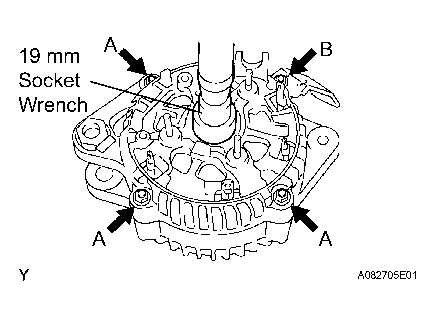
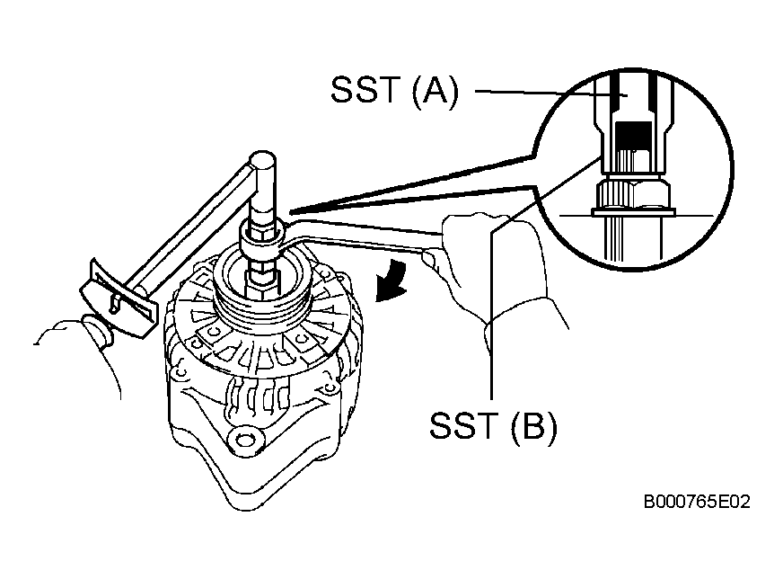
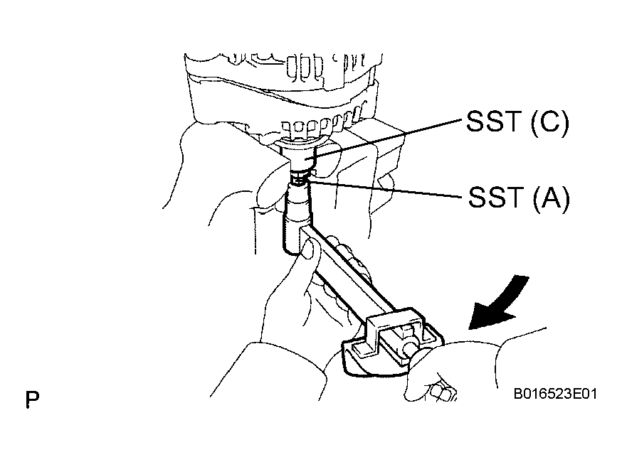

Charging (1NZ-FE): Generator: Reassembly
- INSTALL GENERATOR ROTOR ASSEMBLY
- Install the generator rotor.
- Install the generator washer onto the rotor.
- INSTALL GENERATOR RECTIFIER END FRAME
- Using a 19 mm socket wrench and press, slowly press in the rectifier end frame.
- Install the 4 nuts and cord clip.

Courtesy of © TOYOTA, LICENSE AGREEMENT TMS1002Torque: 4.5 N*m (46 kgf*cm, 40 in.*lbf) for nut A
5.4 N*m (55 kgf*cm, 48 in.*lbf) for nut B
- Install the seal plate onto the rectifier end frame.
- Install the 4 rubber insulators onto the lead wires.NOTE: Be careful that the rubber insulators are in the right direction.
- INSTALL GENERATOR HOLDER WITH RECTIFIER
- Install the rectifier holder while pushing it with the 4 screws.
Torque: 2.9 N*m (30 kgf*cm, 26 in.*lbf)
- Install the rectifier holder while pushing it with the 4 screws.
- INSTALL GENERATOR REGULATOR ASSEMBLY
- Install the generator regulator with the 3 screws.
Torque: 2.0 N*m (20 kgf*cm, 18 in.*lbf)
- Install the generator regulator with the 3 screws.
- INSTALL GENERATOR BRUSH HOLDER ASSEMBLY
- Install the brush holder with the 2 screws.
Torque: 2.0 N*m (20 kgf*cm, 18 in.*lbf)
NOTE: Be careful that the holder is in the right direction when installing it. - Install the brush holder cover.
- Install the brush holder with the 2 screws.
- INSTALL REAR END COVER
- Install the end cover and plate terminal with the bolt and 3 nuts.
Torque: 3.9 N*m (40 kgf*cm, 34 in.*lbf) for bolt
4.4 N*m (45 kgf*cm, 39 in.*lbf) for nut
- Install the terminal insulator with the nut.
Torque: 4.1 N*m (42 kgf*cm, 36 in.*lbf)
- Install the end cover and plate terminal with the bolt and 3 nuts.
- INSTALL GENERATOR PULLEY
- Install the pulley to the rotor shaft by tightening the pulley nut by hand.
- Hold SST (A) with a torque wrench, and tighten SST (B) clockwise to the specified torque.

Courtesy of © TOYOTA, LICENSE AGREEMENT TMS1002SST 09820-63010 (09820-06010, 09820-06020)
Torque: 39 N*m (400 kgf*cm, 29 ft.*lbf)
- Check that SST (A) is secured to the pulley shaft.
- Mount SST (C) in a vise.
- Insert SST (B) into SST (C), and attach the pulley nut to SST (C).
- To torque the pulley nut, turn SST (A) in the direction shown in the illustration.

Courtesy of © TOYOTA, LICENSE AGREEMENT TMS1002Torque: 133 N*m (1,356 kgf*cm, 98 ft.*lbf)
- Remove the generator from SST (C).
- Turn SST (B), and remove SST (A and B).